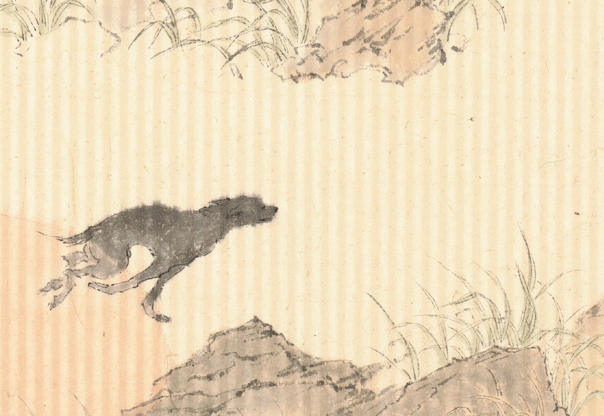
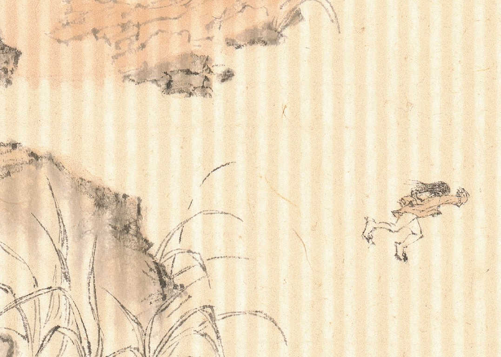

足足 Run Run
將醒之際，廣闊的草地上重複著逃亡與追逐，牠也在逃亡與追逐、牠亦然，而我終將被牠追上，牠也終會被牠捉住。
目が覚めると、広い芝生で逃げ隠したり追いかけたりを繰り返す。彼は逃げながら追いかけ、彼も。 やがて私が追い越され、どっちみち彼も捕らえらてしまうだろう。


將醒之際，廣闊的草地上重複著逃亡與追逐，牠也在逃亡與追逐、牠亦然，而我終將被牠追上，牠也終會被牠捉住。
目が覚めると、広い芝生で逃げ隠したり追いかけたりを繰り返す。彼は逃げながら追いかけ、彼も。 やがて私が追い越され、どっちみち彼も捕らえらてしまうだろう。

